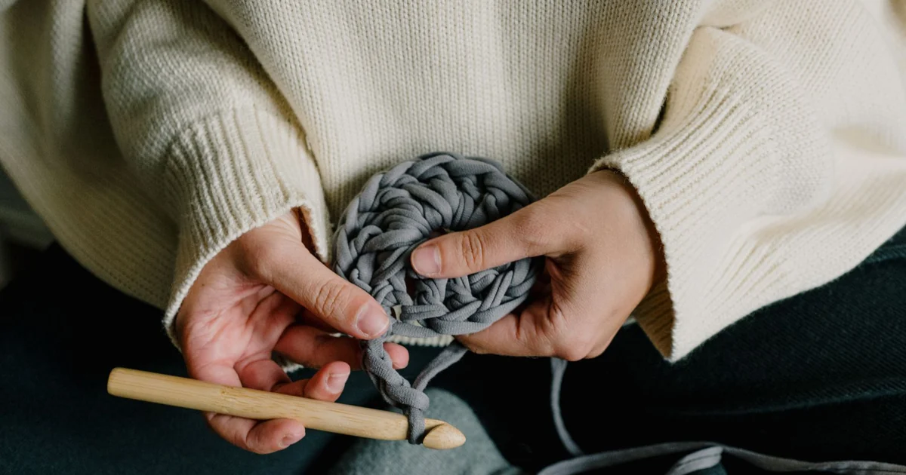

Tools, Yarn & Materials · Beginner guide
How Much Yarn Do You Need for a Crochet Project?
Estimate yarn from pattern yardage when available, then account for project size and your own gauge.

Pattern yardage is the best starting point for a specific design. A sample can give a rough comparison, but it cannot predict every stitch, fiber, or tension.
Before you begin
Record the yarn, hook, stitch, and sample area. Use the project’s stitch pattern when possible.
Step-by-step instructions
- Divide the project yardage by the skein yardage and round up to whole skeins.
- If estimating from a swatch, measure its area and the yarn used, if you have a suitable scale or length data.
- Scale the sample only when stitch and fabric remain comparable; treat the estimate as approximate.
- Allow for swatching, tails, color changes, and planned size adjustments when deciding whether to buy more.
What to check
Use yardage, not skein count alone
For example, 900 yards divided by 225 yards per skein equals four skeins before any margin. This is arithmetic, not a universal allowance; follow the pattern and label.
Frequently asked questions
Can I estimate from a different stitch?
Only roughly. Open stitches and texture can change yarn use for a given area.
Should I buy an extra skein?
Consider the pattern’s margin and whether dye-lot matching matters. The amount depends on the design and your gauge.
How much extra yarn should I buy?
There is no universal percentage. Follow the pattern’s estimate and consider swatching, size changes, gauge, and whether matching the same dye lot matters.
Use the label’s length to calculate skeins
Divide the pattern’s total yardage by the yardage in one skein, then round up because skeins are sold whole. For example, 900 yards divided by 225 yards per skein is four skeins, before any extra amount the pattern recommends. Check that both numbers use the same unit; convert meters and yards before dividing. Net package weight is not a substitute for yardage when skeins differ.
Know what a swatch estimate cannot predict
A swatch can compare yarn use when it uses the same stitch, yarn, hook, and gauge as the project. Scaling a tiny sample to a large blanket or textured garment is approximate: stitch patterns, seams, borders, shaping, and changes in size can alter consumption. Use a pattern’s yardage as the primary estimate when available. If substituting, check the replacement skein’s yardage and buy with dye-lot matching in mind.
Estimate from a matching sample carefully
If the pattern does not give yardage, a sample can provide a rough comparison only when it uses the same stitch, yarn, hook, and gauge. Weighing a swatch may help compare yarn use if you have a suitable scale, but the sample must be large enough to measure and represent the project fabric. Repeats, borders, seams, and finishing tails add material that a small square may not capture. Treat the result as an estimate, not a guarantee, and consider buying from one dye lot if you may need more.
Account for changes that add fabric
A larger size, wider border, extra length, or different stitch pattern can raise yarn use beyond the base pattern estimate. Compare the version you plan to make with the yardage stated for that size and construction. When the pattern gives multiple sizes, use the matching yardage rather than scaling skeins from a different size without checking. If you are changing more than one feature, a swatch can help compare yarn use, but keep the estimate cautious and check whether the label provides enough yardage per skein.
Common mistakes and how to fix them
- Dividing by skein weight instead of yardage. The pattern requirement is usually length. Compare yards or meters on the labels.
- Forgetting to round up whole skeins. A partial result still requires buying another skein if more yarn is needed.
- Scaling an unlike swatch too confidently. Different stitches or gauge change yarn use. Use matching samples and treat estimates as approximate.
Tips that make it easier
- Write the pattern yardage and skein yardage side by side before calculating.
- Keep the same units throughout the division.
- Consider borders, swatching, size changes, and dye-lot availability.
A useful next step
Check the pattern and label together, then use a sample to confirm how the materials behave before starting the full project.